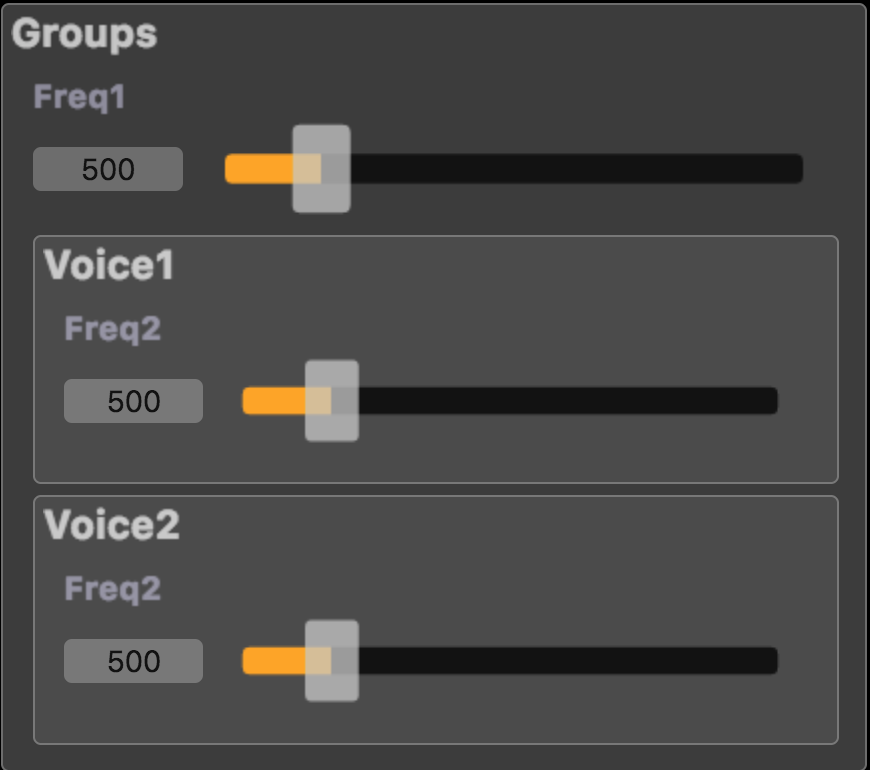

Frequently Asked Questions
Does select2 behaves as a standard C/C++ like if ?
The short answer is no, select2 doesn't behave like the if-then-else of a traditional programming language, nor does ba.if of the standard library. To understand why, think of select2 as the tuner of a radio, it selects what you listen, but does not prevent the various radio stations from broadcasting. Actually, select2 could be easily redefined in Faust as:
select2(i, x, y) = (1-i) * x + i * y;
Strict vs Lazy semantics
In computer science terminology, select2(i,x,y) has so-called strict semantics. This means that its three arguments i, x, y are always evaluated before select2 itself is executed, in other words, even if x or y is not selected. The standard C/C++ if-then-else has lazy semantics. The condition is always executed, but depending of the value of the condition, only the then or the else branch is executed.
The strict semantics of select2 means that you cannot use it to prevent a division by 0 in an expression, or the square root of a negative number, etc... For example, the following code will not prevent a division by 0 error:
select2(x == 0, 1/x, 10000);
You cannot use ba.if either because it is implemented using select2 and has the same strict semantics. Therefore the following code will not prevent a division by 0 error:
ba.if(x == 0, 10000, 1/x);
But things are a little bit more complex...
Concerning the way select2 is compiled by the Faust compiler, the strict semantic is always preserved. In particular, the type system flags problematic expressions and the stateful parts are always placed outside the if. For instance the DSP code:
process = button("choose"), (*(3) : +~_), (*(7):+~_) : select2;
is compiled as the following C++ code, where fRec0[0] and fRec1[0] contains the computation of each branch:
for (int i = 0; (i < count); i = (i + 1)) {
fRec0[0] = (fRec0[1] + (3.0f * float(input0[i])));
fRec1[0] = (fRec1[1] + (7.0f * float(input1[i])));
output0[i] = FAUSTFLOAT((iSlow0 ? fRec1[0] : fRec0[0]));
fRec0[1] = fRec0[0];
fRec1[1] = fRec1[0];
}
For code optimization strategies, the generated code is not fully strict on select2. When Faust produces C++ code, the C++ compiler can decide to avoid the execution of the stateless part of the signal that is not selected (and not needed elsewhere). This doesn't change the semantics of the output signal, but it changes the strictness of the code if a division by 0 would have been executed in the stateless part. When stateless expressions are used, they are by default generated using a non-strict conditional expression.
For instance the following DSP code:
process = select2((+(1)~_)%10, sin:cos:sin:cos, cos:sin:cos:sin);
is compiled in C/C++ as:
for (int i0 = 0; i0 < count; i0 = i0 + 1) {
iRec0[0] = iRec0[1] + 1;
output0[i0] = FAUSTFLOAT(((iRec0[0] % 10)
? std::sin(std::cos(std::sin(std::cos(float(input1[i0])))))
: std::cos(std::sin(std::cos(std::sin(float(input0[i0])))))));
iRec0[1] = iRec0[0];
}
where only one of the then or else branch will be effectively computed, thus saving CPU.
If computing both branches is really desired, the -sts (--strict-select) option can be used to force their computation by putting them in local variables, as shown in the following generated with -sts code version of the same DSP code:
for (int i0 = 0; i0 < count; i0 = i0 + 1) {
iRec0[0] = iRec0[1] + 1;
float fThen0 = std::cos(std::sin(std::cos(std::sin(float(input0[i0])))));
float fElse0 = std::sin(std::cos(std::sin(std::cos(float(input1[i0])))));
output0[i0] = FAUSTFLOAT(((iRec0[0] % 10) ? fElse0 : fThen0));
iRec0[1] = iRec0[0];
}
to therefore preserve the strict semantic, even if a non-strict (cond) ? then : else form is used to produce the result of the select2 expression.
This can be helpful for debugging purposes like testing if there is no division by 0, or producing INF or NaN values. The interp-tracer can be used for that by adding the -sts option.
So again remember that select2 cannot be used to avoid computing something. For computations that need to avoid some values or ranges (like doing val/0 that would return INF, or log of a negative value that would return NaN), the solution is to use min and max to force the arguments to be in the correct domain of values. For example, to avoid division by 0, you can write 1/max(epsilon, x).
Note that select2 is also typically used to compute rdtable/rwtable access indexes. In this case computing a out-of-bound value, if is not used later on, is not a problem.
What properties does the Faust compiler and generated code have ? (In progress)
Compiler
The compiler itself is turing complete because it contains a pattern matching meta-programming model. Thus a Faust DSP program can loop at compile time. For instance the following:
foo = foo;
process = foo;
will loop and hopefully end with the message: ERROR : after 400 evaluation steps, the compiler has detected an endless evaluation cycle of 2 steps because the compiler contains an infinite loop detection heuristic.
Generated code
The generated code computes the sample in a finite number of operations, thus a DSP program that would loop infinitely cannot be written. It means the generated code is not turing complete. This is of course a limitation because certain classes of algorithms cannot be expressed (TODO: Newton approximation used in diode VA model). But on the contrary it gives a strong garanty on the upper bound of CPU cost that is quite interesting to have when deploying a program in a real-time audio context.
Memory footprint
The DSP memory footprint is perfectly known at compile time, so the generated code always consume a finite amount of memory. Moreover the standard deployement model is to allocate the DSP a load time, init it with a given sample-rate, then execute the DSP code, be repeatedly calling the compute function to process audio buffers.
CPU footprint
Since the generated code computes the sample in a finite number of operations, the CPU use has an upper bound which is a very helpful property when deploying a program in a real-time audio context. Read the Does select2 behaves as a standard C/C++ like if ? for some subtle issues concerning the select2 primitive.
Pattern matching and lists
Strictly speaking, there are no lists in Faust. For example the expression () or NIL in Lisp, which indicates an empty list, does not exist in Faust. Similarly, the distinction in Lisp between the number 3 and the list with only one element (3) does not exist in Faust.
However, list operations can be simulated (in part) using the parallel binary composition operation , and pattern matching. The parallel composition operation is right-associative. This means that the expression (1,2,3,4) is just a simplified form of the fully parenthesized expression (1,(2,(3,4))). The same is true for (1,2,(3,4)) which is also a simplified form of the same fully parenthesized expression (1,(2,(3,4))).
You can think of pattern-matching as always being done on fully parenthesized expressions. Therefore no Faust function can ever distinguish (1,2,3,4) from (1,2,(3,4)), because they represent the same fully parenthesized expression (1,(2,(3,4))).
This is why ba.count( ((1,2), (3,4), (5,6)) ) is not 3 but 4, and also why ba.count( ((1,2), ((3,4),5,6)) ) is not 2 but 4.
Explanation: in both cases the fully parenthesized expression is ( (1,2),((3,4),(5,6)) ). The definition of ba.count being:
count((x,y)) = 1 + count(y); // rule R1
count(x) = 1; // rule R2
we have:
ba.count( ((1,2),((3,4),(5,6))) )
-R1-> 1 + ba.count( ((3,4),(5,6)) )
-R1-> 1 + 1 + ba.count( (5,6) )
-R1-> 1 + 1 + 1 + ba.count( 6 )
-R2-> 1 + 1 + 1 + 1
Please note that pattern matching is not limited to parallel composition, the other composition operators (<: : :> ~) can be used too.
What is the situation about Faust compiler licence and the deployed code?
Q: Does the Faust license (GPL) apply somehow to the code exports that it produces as well? Or can the license of the exported code be freely chosen such that one could develop commercial software (e.g. VST plug-ins) using Faust?
A: You can freely use Faust to develop commercial software. The GPL license of the compiler doesn't apply to the code generated by the compiler.
The license of the code generated by the Faust compiler depends only on the licenses of the input files. You should therefore check the licenses of the Faust libraries used and the architecture files. On the whole, when used unmodified, Faust libraries and architecture files are compatible with commercial, non-open source use.
Surprising effects of vgroup/hgroup on how controls and parameters work
User interface widget primitives like button, vslider/hslider, vbargraph/hbargraph allow for an abstract description of a user interface from within the Faust code. They can be grouped in a hiearchical manner using vgroup/hgroup/tgroup primitives. Each widget then has an associated path name obtained by concatenating the labels of all its surrounding groups with its own label.
Widgets that have the same path in the hiearchical structure will correspond to a same controller and will appear once in the GUI. For instance the following DSP code does not contain any explicit grouping mechanism:
import("stdfaust.lib");
freq1 = hslider("Freq1", 500, 200, 2000, 0.01);
freq2 = hslider("Freq2", 500, 200, 2000, 0.01);
process = os.osc(freq1) + os.square(freq2), os.osc(freq1) + os.triangle(freq2);

So even if freq1 and freq2 controllers are used as parameters at four different places, freq1 used in os.osc(freq1) and os.square(freq1) will have the same path (like /foo/Freq1 and /foo/Freq2), be associated to a unique controller, and will finally appear once in the GUI. And this is the same mecanism for freq2.
Now if some grouping mecanism is used to better control the UI rendering, as in the following DSP code:
import("stdfaust.lib");
freq1 = hslider("Freq1", 500, 200, 2000, 0.01);
freq2 = hslider("Freq2", 500, 200, 2000, 0.01);
process = hgroup("Voice1", os.osc(freq1) + os.square(freq2)), hgroup("Voice2", os.osc(freq1) + os.triangle(freq2));
The freq1 and freq2 controllers now don't have the same path in each group (like /foo/Voice1/Freq1 and /foo/Voice1/Freq2 in the first group,f and /foo/Voice2/Freq1 and /foo/Voice2/Freq2 in the second group), and so four separated controllers and UI items are finally created.

Using the relative pathname as explained in Labels as Pathnames possibly allows us to move freq1 one step higher in the hierarchical structure, thus having again a unique path (like /foo/Freq1) and controller:
import("stdfaust.lib");
freq1 = hslider("../Freq1", 500, 200, 2000, 0.01);
freq2 = hslider("Freq2", 500, 200, 2000, 0.01);
process = hgroup("Voice1", os.osc(freq1) + os.square(freq2)), hgroup("Voice2", os.osc(freq1) + os.triangle(freq2));
